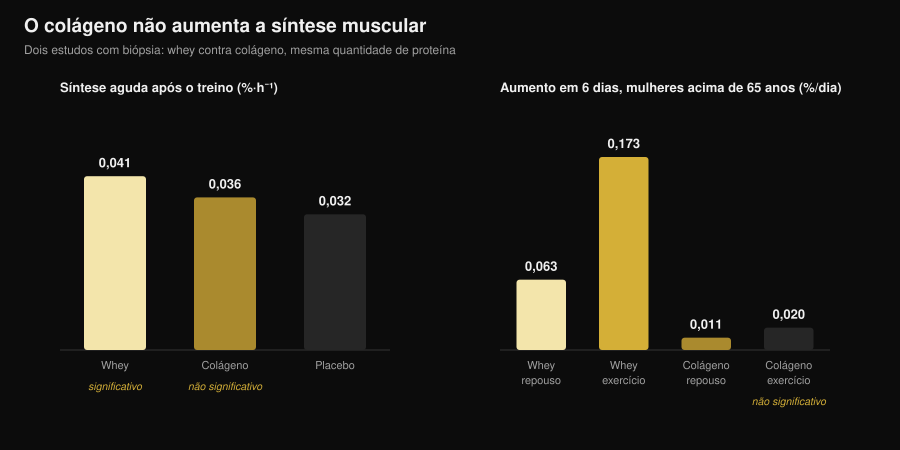
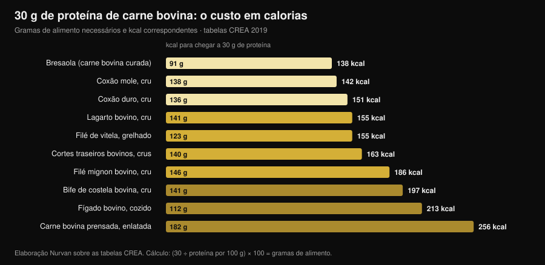

Beef protein: a proteína de carne vale como a whey?
As buscas por "beef protein powder" cresceram 467% e o pote promete a coisa mais lógica do mundo: se músculo é carne, coma carne. No papel se sustenta, e a maior meta-análise dá razão à carne bovina — ela empata com a whey. O problema é que "beef protein" no rótulo diz de qual animal veio aquele pó, não de qual parte. E essa diferença separa um suplemento que funciona de um que não faz nada.

Em resumo
- Contra a whey é empate. Meta-análise de 7 estudos e 270 pessoas: nenhuma diferença entre proteína bovina e whey em massa magra (diferença padronizada −0,01), massa gorda (0,07) e proteína total ingerida (0,04).
- Contra não suplementar, a carne ganha. Em relação a quem não toma nada, aumenta massa magra (0,34) e força de membros inferiores (0,40). Mas é o efeito de "mais proteína no dia", não de "mais carne bovina".
- A palavra que importa no rótulo é colágeno. Nos pós derivados de colágeno a síntese proteica muscular não se move: em mulheres acima de 65 anos, em seis dias, a whey a elevou em 0,173 %/dia na perna treinada e o colágeno em 0,020 — indistinguível do ponto de partida.
- E o rótulo nem sempre está certo. Uma análise italiana de cinco suplementos esportivos do mercado encontrou casos em que os aminoácidos realmente presentes não correspondiam aos declarados pelo fabricante.
- A vantagem real da carne bovina é o ferro. Em triatletas master, dez semanas de proteína bovina levaram a ferritina de 117 para 150 ng/mL; com whey e carboidratos isso não aconteceu.
Por que todo mundo fala de beef protein
O raciocínio que vende o produto é simples e intuitivo: o músculo é feito de proteína animal, a carne vermelha é a proteína animal por excelência, então um pó de carne bovina deveria ser o caminho mais direto para o músculo. Somam-se três argumentos práticos: nada de lactose, nada de laticínios para quem segue dieta carnívora ou paleo, e o ferro heme que a whey não tem.
Nenhum desses pontos é absurdo. O problema é que "beef protein" é um nome comercial, não uma especificação técnica. Diz a espécie, não o tecido. E de um boi saem duas matérias-primas muito diferentes que podem virar pó.
O que há de verdade dentro do pote
A primeira matéria-prima é o músculo: carne magra hidrolisada ou isolada, com perfil de aminoácidos essenciais próximo ao do bife que você comeria. É a usada nos estudos sérios sobre beef protein, e funciona.
A segunda é o colágeno: aparas, pele, tendões, tecido conjuntivo. É proteína para todos os efeitos, pesa como proteína na tabela nutricional, custa muito menos e se processa muito bem em pó. Mas seu perfil de aminoácidos é desequilibrado — muitíssima glicina e prolina, pouquíssima leucina — e a leucina é o aminoácido que liga a construção de proteína muscular. Um pó de colágeno pode declarar 25 g de proteína por porção e não mover um milímetro a síntese muscular.
Não é suspeita: foi medido três vezes com técnicas diferentes. Em adultos jovens, 30 g de colágeno após o treino não aumentaram de forma significativa a síntese das proteínas contráteis em relação ao placebo, enquanto 30 g de whey sim (Aussieker et al., 2023). Em mulheres acima de 65 anos, seis dias de suplementação: a whey elevou a síntese tanto em repouso quanto na perna treinada, o colágeno em nenhuma das duas (Oikawa et al., 2020). Em homens idosos, 50 g por dia acima da recomendação aumentaram a síntese com whey e com ervilha, mas não com colágeno (McKendry et al., 2024).

E mesmo quando a matéria-prima é a certa, o rótulo não é garantia automática: um grupo da Universidade de Milão caracterizou a fração proteica de cinco suplementos esportivos do comércio e encontrou proteínas fortemente glicosiladas e, em alguns casos, aminoácidos adicionados que não correspondiam aos declarados, concluindo que seriam necessários testes de lote obrigatórios (Pellegrino et al., 2022).
O que a pesquisa realmente diz
| Afirmação comum | Veredito | Fonte |
|---|---|---|
| "A carne bovina constrói mais músculo que a whey" | Desmentido: empate | Valenzuela et al., 2019 |
| "Beef protein não serve para nada" | Desmentido, com ressalva | Valenzuela et al., 2019 |
| "É carne, então é proteína completa" | A precisar: depende da matéria-prima | Oikawa 2020; Aussieker 2023; McKendry 2024 |
| "O pó é melhor que a carne de verdade" | Desmentido | Negro et al., 2014 |
| "Sem lactose, a carne bovina é a única opção" | Desmentido | Sharp et al., 2018 |
| "Quanto mais tomar, mais cresce" | Desmentido | McKenna et al., 2021 |
| "Ajuda no ferro" | Confirmado, em um contexto preciso | Naclerio et al., 2017 |
Afirmação 1 — "A carne bovina constrói mais músculo que a whey"
É a comparação direta e a resposta é um empate claro. Uma revisão sistemática com meta-análise reuniu sete ensaios randomizados com 270 pessoas que treinavam com pesos, comparando proteína bovina, whey e nenhuma suplementação. Entre carne e whey nada as separou: proteína total ingerida 0,04, massa magra −0,01, massa gorda 0,07 — diferenças padronizadas todas perto de zero, nenhuma estatisticamente significativa.
Os estudos individuais dizem o mesmo. Oito semanas com 46 g de proteína após o treino: isolado bovino, frango hidrolisado e concentrado de whey aumentaram todos a massa magra em relação ao início, a maltodextrina de controle não, e entre as três proteínas não houve diferenças de força (Sharp et al., 2018).
Afirmação 2 — "Beef protein não serve para nada"
Também não se sustenta. Na mesma meta-análise, em relação a quem não suplementava, a carne bovina aumentou a proteína ingerida no dia (0,68), a massa magra (0,34) e a força de membros inferiores (0,40). Efeitos pequenos, mas reais.
A ressalva importa: quase certamente não é efeito da carne, e sim de atingir uma cota proteica adequada. Os autores escrevem isso com clareza, e outro estudo deixa ainda mais evidente: em homens que treinavam com pesos, 20 g por dia de carne bovina hidrolisada, de whey ou só carboidratos produziram ganhos de força praticamente equivalentes, com diferenças mínimas na composição corporal (Naclerio et al., 2017). Se sua dieta já tem proteína suficiente, o pote acrescenta pouco.
Afirmação 3 — "Quanto mais tomar, mais cresce"
Dez semanas de treino com pesos em adultos de meia-idade, com orientação alimentar e proteína de carne bovina magra: um grupo em torno de 1,0 g por kg de peso ao dia, o outro em torno de 1,6. A força máxima aumentou em todos os exercícios, sem qualquer efeito da quantidade de proteína (McKenna et al., 2021). Passado certo limiar, adicionar pó não adiciona resultado — o mesmo princípio que vale para o horário de uso, como vi no artigo sobre quando tomar os suplementos.
Afirmação 4 — "O pó é melhor que a carne de verdade"
Um estudo italiano fez o teste mais direto possível: 135 g de carne magra enlatada depois do treino, ou seja 20 g de proteína e 1,7 g de gordura, por oito semanas. O grupo que a comia perdeu 1,9 kg de massa gorda e ganhou 2,3 kg de massa livre de gordura; o grupo controle sem suplementação não (Negro et al., 2014). Carne de verdade, nenhum pó, mesmo resultado. Os autores a descrevem como "uma estratégia nutricional somada a outras proteínas ou suplementos de aminoácidos": uma opção, não uma superioridade.
Afirmação 5 — "Ajuda no ferro"
Aqui a carne bovina tem uma vantagem própria, e ela aparece em quem precisa. Em triatletas master de 35 a 60 anos, dez semanas com 20 g por dia de proteína bovina aumentaram a ferritina de 117 para 150 ng/mL, enquanto whey e carboidratos não produziram mudança; nesse mesmo grupo a espessura do vasto medial foi preservada, o que não ocorreu nos outros dois braços (Naclerio et al., 2017).
Leia pelo que é: um resultado em atletas de endurance, população cujas reservas de ferro costumam estar sob pressão. Na meta-análise acima, a carne bovina não aumentou de forma estatisticamente significativa o ferro ingerido em relação a não suplementar. E se você suspeita de carência, o único caminho sensato é exame de sangue e médico, não um suplemento escolhido por conta própria.
A conta das calorias: carne de verdade contra pó
Se o ponto do beef protein é tirar a proteína da carne bovina, vale saber quanto custa fazer isso com a carne. Calculei nas tabelas italianas CREA quantos gramas de cada corte são necessários para chegar a 30 g de proteína — a quantidade usada na maioria dos estudos de síntese muscular — e quantas calorias isso traz.

O resultado é que a carne magra não é nada cara em calorias: 138 g de coxão mole cru dão 30 g de proteína com 142 kcal, pouco mais que uma porção de peito de frango. Noventa e um gramas de bresaola fazem o mesmo com 138 kcal. No extremo oposto, a carne prensada enlatada pede 182 g e 256 kcal para a mesma cota, e um bife de costela pede 197.
Uma porção de pó costuma ficar entre 100 e 130 kcal para 25-30 g de proteína: na prática o mesmo que o coxão mole, com duas diferenças práticas. O pó se transporta, se bebe em trinta segundos e se dosa ao grama; a carne sacia, custa menos por grama de proteína e não exige perícia no rótulo. A escolha é logística, não fisiológica.
Como aplicar
- Conte primeiro a proteína que já come. Se você está em torno de 1,6 g por kg de peso ao dia distribuídos nas refeições, a margem de ganho de qualquer pó é pequena: o estudo de 1,0 contra 1,6 g/kg não encontrou vantagem em subir mais.
- Leia os ingredientes, não a frente do pote. Procure "colágeno", "colágeno hidrolisado", "gelatina" ou "proteína bovina hidrolisada" sem mais detalhe. Se aparecerem nas primeiras posições, aquele pó não substitui a whey.
- Procure o perfil de aminoácidos no rótulo. Sem leucina declarada (indicativamente 2-3 g por porção nas fontes de alto valor biológico) você não tem como saber o que está comprando.
- Não pague a mais por "é carne". Nos resultados de academia, carne bovina e whey empatam. Se a carne custa mais e você não tem um motivo específico para escolhê-la, não tem.
- O motivo específico existe em dois casos. Intolerância marcada à lactose ou exclusão de laticínios: aí a carne bovina é uma escolha sensata, mas não a única — na comparação direta o frango hidrolisado também funcionou.
- Para o ferro, passe pelos exames. Ferritina baixa, cansaço, carga de endurance: são coisas para medir e conversar com um médico, não para resolver com suplemento comprado pela internet.
Experimente o Nurvan — proteína contada com dados reais
A parte de nutrição do Nurvan trabalha sobre uma base oficial de composição de alimentos: você registra o que come e vê quanta proteína as refeições realmente entregam, dia a dia. Na seção de suplementação você acompanha o que toma e quando, e no mesmo perfil ficam as cargas de treino e os exames que subiu. Assim a pergunta "preciso de um pó?" deixa de ser impressão e vira número.
Perguntas frequentes
Beef protein é melhor que whey?
Não, empata. A meta-análise de sete ensaios randomizados e 270 pessoas não encontra diferenças entre proteína bovina e whey em massa magra, massa gorda e proteína total ingerida (Valenzuela et al., 2019). Escolha por tolerância, preço e preferência.
Como sei se um beef protein é feito de colágeno?
Pela lista de ingredientes e pelo perfil de aminoácidos. Expressões como colágeno hidrolisado, gelatina ou "proteína bovina hidrolisada" sem especificação são o sinal; leucina não declarada ou muito baixa confirma. Nos ensaios com biópsia muscular o colágeno não aumentou a síntese proteica, nem em jovens nem em idosos.
Beef protein serve para intolerantes à lactose?
Sim, é uma das razões sensatas para escolhê-lo, mas não é a única opção: na comparação direta de oito semanas o frango hidrolisado também aumentou a massa magra tanto quanto carne bovina e whey (Sharp et al., 2018), e os isolados de whey contêm quantidades mínimas de lactose.
Melhor pó de carne bovina ou comer carne?
Nos resultados, a carne de verdade se sai muito bem: 135 g de carne magra enlatada após o treino reduziram a massa gorda e aumentaram a massa livre de gordura em oito semanas (Negro et al., 2014). O pó só ganha em praticidade e precisão de dose.
Leia também
- Proteína vegetal ou animal para os músculos? — o que acontece quando a fonte proteica muda de verdade, medido com biópsia.
- Ranking de suplementos de força: o que diz a ciência — onde as proteínas em pó se situam frente a creatina e cafeína.
- Quando tomar os suplementos: o horário conta? — por que a quantidade total pesa mais que o momento da ingestão.
Fontes
Referências bibliográficas recuperadas pelo PubMed. Tema escolhido pela pesquisa de tendência de 3 de novembro de 2026: "beef protein powder" é uma das buscas de fitness que mais cresce, mas as páginas que a ocupam pertencem quase todas a quem vende o pó.
- Valenzuela PL, Mata F, Morales JS, Castillo-García A, Lucia A, 2019. Does Beef Protein Supplementation Improve Body Composition and Exercise Performance? A Systematic Review and Meta-Analysis of Randomized Controlled Trials. Nutrients 11(6):1429. PMID 31242624. DOI
- Sharp MH, Lowery RP, Shields KA, Lane JR, Gray JL, Partl JM, Hayes DW, Wilson GJ, Hollmer CA, Minivich JR, Wilson JM, 2018. The Effects of Beef, Chicken, or Whey Protein After Workout on Body Composition and Muscle Performance. Journal of Strength and Conditioning Research 32(8):2233-2242. PMID 28399016. DOI
- Naclerio F, Seijo M, Larumbe-Zabala E, Earnest CP, 2017. Carbohydrates Alone or Mixing With Beef or Whey Protein Promote Similar Training Outcomes in Resistance Training Males: A Double-Blind, Randomized Controlled Clinical Trial. International Journal of Sport Nutrition and Exercise Metabolism 27(5):408-420. PMID 28530448. DOI
- Naclerio F, Seijo M, Larumbe-Zabala E, Ashrafi N, Christides T, Karsten B, Nielsen BV, 2017. Effects of Supplementation with Beef or Whey Protein Versus Carbohydrate in Master Triathletes. Journal of the American College of Nutrition 36(8):593-601. PMID 28910233. DOI
- Negro M, Vandoni M, Ottobrini S, Codrons E, Correale L, Buonocore D, Marzatico F, 2014. Protein supplementation with low fat meat after resistance training: effects on body composition and strength. Nutrients 6(8):3040-9. PMID 25093275. DOI
- Oikawa SY, Kamal MJ, Webb EK, McGlory C, Baker SK, Phillips SM, 2020. Whey protein but not collagen peptides stimulate acute and longer-term muscle protein synthesis with and without resistance exercise in healthy older women: a randomized controlled trial. The American Journal of Clinical Nutrition 111(3):708-718. PMID 31919527. DOI
- Aussieker T, Hilkens L, Holwerda AM, Fuchs CJ, Houben LHP, Senden JM, van Dijk JW, Snijders T, van Loon LJC, 2023. Collagen Protein Ingestion during Recovery from Exercise Does Not Increase Muscle Connective Protein Synthesis Rates. Medicine and Science in Sports and Exercise 55(10):1792-1802. PMID 37202878. DOI
- McKendry J, Lowisz CV, Nanthakumar A, MacDonald M, Lim C, Currier BS, Phillips SM, 2024. The effects of whey, pea, and collagen protein supplementation beyond the recommended dietary allowance on integrated myofibrillar protein synthetic rates in older males: a randomized controlled trial. The American Journal of Clinical Nutrition 120(1):34-46. PMID 38762187. DOI
- Pellegrino L, Hogenboom JA, Rosi V, Sindaco M, Gerna S, D'Incecco P, 2022. Focus on the Protein Fraction of Sports Nutrition Supplements. Molecules 27(11):3487. PMID 35684425. DOI
- McKenna CF, Salvador AF, Hughes RL, Scaroni SE, Alamilla RA, Askow AT, Paluska SA, Dilger AC, Holscher HD, De Lisio M, Khan NA, Burd NA, 2021. Higher protein intake during resistance training does not potentiate strength, but modulates gut microbiota, in middle-aged adults: a randomized control trial. American Journal of Physiology-Endocrinology and Metabolism 320(5):E900-E913. PMID 33682457. DOI
Giammaria Loi é o fundador do Nurvan. Treina com pesos desde 2012, trabalha como personal trainer e coach certificado FIPE desde 2013 e compete no powerlifting em nível nacional desde 2018. Cada artigo que assina parte dos estudos científicos e chega ao que funciona de verdade na academia.
Nota: conteúdo informativo, não substitui a opinião de um médico ou profissional.